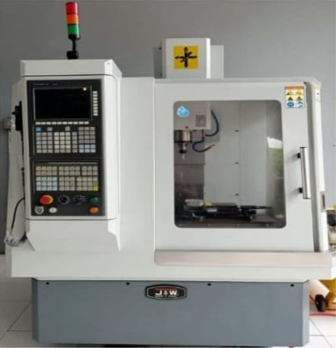

VMC-320 “J&W”
CNC Vertical Machine Center
Technical Parameters
| Specification | Unit | Value |
|---|---|---|
| Size of worktable (length*width) | mm | 700x210 |
| T slot (width * qty * space between) | Mm*pc*mm | 11x4x45 |
| Max loading weight on worktable | Kg | 200 |
| X-Axis travel | mm | 365 |
| Y-Axis travel | mm | 260 |
| Z-Axis travel | mm | 440 |
| Distance between spindle nose and table | mm | 70-510 |
| Distance between spindle center and column | mm | 290 |
| Spindle taper | BT | 30 |
| Max. spindle speed | r/min | 8000 |
| Spindle motor power | kw | 2.2/3.7 |
| Feeding motor power: X Axis | kw | 1.8 |
| Feeding motor power: Y Axis | kw | 1.8 |
| Feeding motor power: Z Axis | kw | 1.8 |
| Rapid feeding speed: X,Y,Z axis | m/min | 12 |
| Feeding speed | Mm/min | 0-4000 |
| Min. set unit | mm | 0.001 |
| Max. size of tool | mm | Ø 60x175 |
| ATC capacity | 10 tools position | |
| Max. loading weight of tools | kg | 3.5 |
| N.W. (Net Weight) | kg | 1300 |
| Packing size (LxWxH) | mm | 1400x1500x2000 |